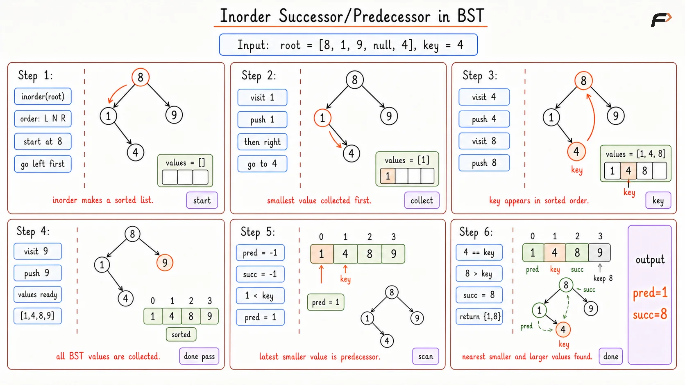
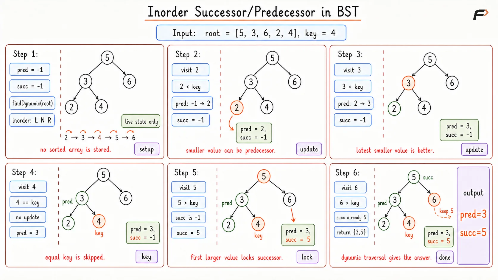
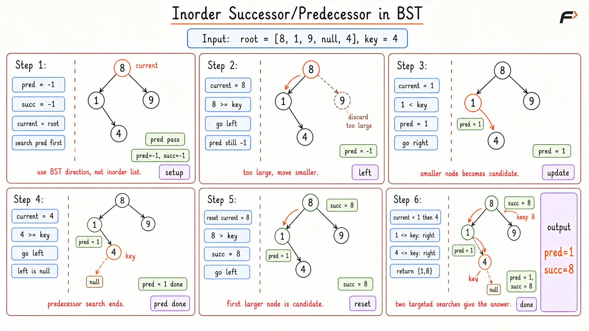

Find the Inorder Successor and Predecessor in a Binary Search Tree
The Inorder Successor and Predecessor in BST problem requires you to analyze a binary search tree given its root node and a specific target key. Your objective is to find two values: the predecessor (the largest node value that is strictly smaller than the given key) and the successor (the smallest node value that is strictly greater than the given key). If either the predecessor or successor cannot be found, you should return -1 for that respective value.
Example 1
Input: Root of tree with nodes [8, 1, 9, null, 4, null, 10, 3], Key = 4
Output: [3, 8]
Explanation: If we arrange the tree values in order, we get 1, 3, 4, 8, 9, 10. The value directly preceding 4 is 3. The value directly following 4 is 8.
Example 2
Input: Root of tree with nodes [20, 8, 22, 4, 12, null, null, 10, 14], Key = 8
Output: [4, 10]
Explanation: The sorted values are 4, 8, 10, 12, 14, 20, 22. The largest value that is strictly less than 8 is 4. The smallest value that is strictly greater than 8 is 10.
Brute Force Approach
Imagine you have a group of students standing randomly in a room, and you need to find the person who scored just below and just above 85 marks. The most straightforward way is to ask everyone to line up in increasing order of their marks. Once they form a sorted line, you just scan from start to finish, recording the highest score below 85 and the first score above 85.
In a binary search tree, performing an inorder traversal naturally visits the nodes in strictly increasing order. By doing this and saving every single value into an array, we create our sorted "line of students." We can then loop through this array to find our predecessor and successor.
Algorithm
Create a dynamic array to hold the tree's values.
Perform a recursive inorder traversal (Left, Root, Right) to populate the array with sorted values.
Initialize predecessor and successor variables to -1.
Iterate through the populated array.
If the current value is less than the key, update the predecessor. This ensures the predecessor gets updated to the highest possible valid value by the time the loop ends.
If the current value is greater than the key, and the successor is still -1, update the successor. This captures the very first valid larger value.
Return the final values.
Dry Run

Inorder Successor Predessor Brute Dry Run
Solution
#include <bits/stdc++.h>
using namespace std;
// Definition for a binary tree node
struct TreeNode {
int val;
TreeNode *left;
TreeNode *right;
TreeNode(int x) : val(x), left(NULL), right(NULL) {}
};
class Solution {
private:
// Perform standard inorder traversal to extract elements in ascending order
void inorder(TreeNode* root, vector<int>& values) {
// Base case to prevent traversing non-existent child nodes
if (root == NULL) {
return;
}
// Visit the left branch to collect smaller numbers first
inorder(root->left, values);
// Store the current valid node's value into our collection
values.push_back(root->val);
// Visit the right branch to collect larger numbers
inorder(root->right, values);
}
public:
// Main logic to search for exact predecessor and successor in the sorted array
vector<int> findPredecessorAndSuccessor(TreeNode* root, int key) {
vector<int> values;
// Extract all tree nodes into the values array
inorder(root, values);
// Default answers to -1 to safely handle cases where answers do not exist
int pred = -1;
int succ = -1;
// Linearly scan the sorted collection to locate the target boundaries
for (int i = 0; i < values.size(); i++) {
// Keep updating predecessor with smaller values to eventually capture the maximum smaller value
if (values[i] < key) {
pred = values[i];
}
// Lock in the successor on the very first value that exceeds the key
else if (values[i] > key && succ == -1) {
succ = values[i];
}
}
return {pred, succ};
}
};
// Driver code starts here
int main() {
TreeNode* root = new TreeNode(8);
root->left = new TreeNode(1);
root->right = new TreeNode(9);
root->left->right = new TreeNode(4);
Solution obj;
int key = 4;
vector<int> result = obj.findPredecessorAndSuccessor(root, key);
cout << "Predecessor: " << result[0] << ", Successor: " << result[1] << endl;
return 0;
}Complexity Analysis
Time Complexity: O(N), where N is the number of nodes in the tree. We visit all nodes to build the array, and then we loop through the array once.
Space Complexity: O(N), due to the extra memory allocated for the array that holds all N elements.
Better Approach
Storing every single student's score in an array wastes a lot of memory, especially if the tree has millions of nodes. We only care about two specific numbers, so holding all of them simultaneously is unnecessary.
Instead of saving the numbers, we evaluate them on the fly. We maintain variables to hold our target answers, updating them during the traversal without using any extra external arrays.
Imagine you stand at a single door while the students walk out one by one in increasing order of their marks. You hold a notepad with two blank spaces: one for the predecessor and one for the successor. As a student walks by, if their score is lower than your target, you erase the old number on your notepad and write their score down. Because they are walking out in increasing order, by the time someone walks past with a score higher than your target, your notepad will naturally hold the highest possible score below the target. For the successor, the very first person who walks out with a score higher than your target is the exact person you need, so you write their score down and you can stop checking for successors.
If you want to understand this in detail, check our guide on Tree Traversals.
Algorithm
Declare global or class-level variables to track the predecessor and successor. Set them to -1.
Write an inorder traversal function (Left, Root, Right).
Inside the traversal, process the current node before visiting its right child.
Check if the current node's value is strictly less than the key. If so, update the predecessor variable.
Check if the current node's value is strictly greater than the key. If so, and if the successor variable is still -1, update the successor variable.
Trigger the traversal from the main function and return the variables.
Dry Run

Inorder Successor Predessor Better Dry Run
Solution
#include <bits/stdc++.h>
using namespace std;
// Definition for a binary tree node
struct TreeNode {
int val;
TreeNode *left;
TreeNode *right;
TreeNode(int x) : val(x), left(NULL), right(NULL) {}
};
class Solution {
private:
// Variables kept at class level to maintain state across recursive calls
int pred = -1;
int succ = -1;
// Perform an optimized traversal that processes elements dynamically
void findDynamic(TreeNode* root, int key) {
// Stop recursion when branch ends
if (root == NULL) {
return;
}
// Recursively process left subtree to evaluate smaller elements first
findDynamic(root->left, key);
// Check if the current node qualifies as a better, larger predecessor
if (root->val < key) {
pred = root->val;
}
// Check if current node is the very first valid successor we encounter
else if (root->val > key && succ == -1) {
succ = root->val;
}
// Recursively process right subtree
findDynamic(root->right, key);
}
public:
// Main function acting as the trigger for the traversal
vector<int> findPredecessorAndSuccessor(TreeNode* root, int key) {
findDynamic(root, key);
return {pred, succ};
}
};
// Driver code starts here
int main() {
TreeNode* root = new TreeNode(5);
root->left = new TreeNode(3);
root->right = new TreeNode(6);
root->left->left = new TreeNode(2);
root->left->right = new TreeNode(4);
Solution obj;
int key = 4;
vector<int> result = obj.findPredecessorAndSuccessor(root, key);
cout << "Predecessor: " << result[0] << ", Successor: " << result[1] << endl;
return 0;
}Complexity Analysis
Time Complexity: O(N), because we still have to visit almost every node in the tree to perform the traversal.
Space Complexity: O(H), where H is the height of the tree. The extra space strictly comes from the system call stack used for recursion.
Optimal Approach
Why the previous approach is inefficient: Even though we saved space, we are still visiting almost every node in the tree (O(N) Time). A massive tree might require traversing thousands of useless nodes.
What improvement this approach brings: We stop treating the tree like a general graph and start using the core rules of a binary search tree to navigate straight down to our exact answers, completely ignoring the useless halves of the tree.
Imagine playing a number guessing game. If the host says your guess of 50 is "too high", you immediately ignore every number above 50. You don't verify them; you just discard them.
We can navigate the tree the same way. If we want a successor (a number bigger than the key), and the current node is smaller than or equal to the key, we must go to the right branch because the right side holds larger numbers. If the current node is bigger than the key, it is a potential successor! We quickly write it down, but we try to find a "tighter" or closer fit by navigating to its left branch. This logic effectively traces a direct line to the answer instead of visiting the whole tree.
Algorithm
Initialize
predecessorandsuccessorvariables to -1 to store the final nodes.To find the predecessor, start at the root node. Loop until you fall off a leaf (the node becomes null).
If the current node value is strictly less than the key, it is a valid predecessor. Save its value, and move right to try and find an even larger valid candidate.
If the current node value is greater than or equal to the key, it is useless for our predecessor search. Move left to find smaller candidates.
To find the successor, reset to the root node. Loop until the node becomes null.
If the current node value is strictly greater than the key, it is a valid successor. Save its value, and move left to try and find a smaller valid candidate.
If the current node value is less than or equal to the key, it is useless for our successor search. Move right.
Return the results.
Dry Run

Inorder Successor Predessor Optimal Dry Run
Solution
#include <bits/stdc++.h>
using namespace std;
// Definition for a binary tree node
struct TreeNode {
int val;
TreeNode *left;
TreeNode *right;
TreeNode(int x) : val(x), left(NULL), right(NULL) {}
};
class Solution {
public:
// Perform targeted binary search to find exact nodes efficiently
vector<int> findPredecessorAndSuccessor(TreeNode* root, int key) {
// Set initial markers to -1 to represent absence of valid nodes
int predecessor = -1;
int successor = -1;
// Use a mobile pointer starting at the root for predecessor search
TreeNode* current = root;
// Navigate downwards, discarding entire branches based on value comparisons
while (current != NULL) {
// If the node is smaller, it's a candidate for predecessor
if (current->val < key) {
// Lock in the value because we want the largest possible valid number
predecessor = current->val;
// Move to the right child to attempt finding an even larger valid number
current = current->right;
} else {
// If the node is equal or too large, discard it and navigate to smaller values
current = current->left;
}
}
// Reset pointer back to the top of the tree for successor search
current = root;
// Navigate downwards, discarding entire branches based on value comparisons
while (current != NULL) {
// If the node is larger, it's a candidate for successor
if (current->val > key) {
// Lock in the value because we want the smallest possible valid number
successor = current->val;
// Move to the left child to attempt finding an even tighter fit
current = current->left;
} else {
// If the node is equal or too small, discard it and navigate to larger values
current = current->right;
}
}
return {predecessor, successor};
}
};
// Driver code starts here
int main() {
TreeNode* root = new TreeNode(8);
root->left = new TreeNode(1);
root->right = new TreeNode(9);
root->left->right = new TreeNode(4);
Solution obj;
int key = 4;
vector<int> result = obj.findPredecessorAndSuccessor(root, key);
cout << "Predecessor: " << result[0] << ", Successor: " << result[1] << endl;
return 0;
}Complexity Analysis
Time Complexity: O(H), where H is the height of the tree. Since we eliminate half the tree at every step (like binary search), we only travel downwards.
Space Complexity: O(1). We use no external arrays and no recursion stack, relying purely on two simple pointer variables.
Interview follow-up Questions
The binary search logic still functions perfectly. It treats the key as a virtual target, gracefully updating the closest smaller value (predecessor) and closest larger value (successor) on its path without crashing.